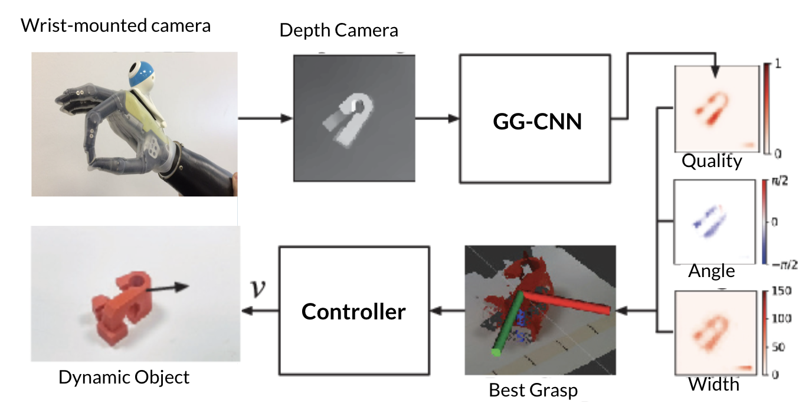

|
Alishba Imran I develop machine learning and robotics methods to accelerate scientific exploration within biology and materials discovery. I'm an incoming Member of Technical Staff at EvolutionaryScale working on research with the team that created ESM. Currently, I'm working at the Arc Institute with Yusuf Roohani and Hani Goodarzi on the Virtual Cell Initiative. Previous to this, I worked at Chan Zuckerberg Biohub with Shalin Mehta, modeling cell dynamics using contrastive learning on time-lapse images. In the past, I worked at Tesla as a lead engineer on physics models and ML methods for battery materials discovery within formation. I also founded Voltx, an ML and physics platform to speed up battery development. We raised a pre-seed round of over $1 million and booked revenue through executing on partnerships with large manufacturers. After working on my company, Voltx, I joined the AI research team at Cruise and worked with the Vector Institute and NVIDIA AI on RL-based research. In high school, I was also co-leading neuro-symbolic AI research at Hanson Robotics, the company which created Sophia The Robot. I'm also grateful to be supported by various communities who have supported my work and education: Masason Foundation, Interact Fellowship, Accel Scholars, and Emergent Ventures. During my time at Berkeley, I was involved with the external and research teams at Machine Learning at Berkeley, where I supported research initiatives and organized events connecting students with founders and startups across the Bay Area. |
ResearchI'm broadly interested in AI, biology, and robotics research. Currently, I'm excited about single-cell perturbation models, multi-modal protein language models, and the interpretability of these methods. |

|
Contrastive learning of cell state dynamics in response to perturbations
Soorya Pradeep, Alishba Imran, Ziwen Liu, Taylla Milena Theodoro, Eduardo Hirata-Miyasaki, Ivan Ivanov, Madhura Bhave, Sudip Khadka, Hunter Woosley, Carolina Arias, Shalin B Mehta arXiv preprint, 2024/10/15 Under review at Cell Patterns Codebase / Visualization Tool We introduce DynaCLR, a self-supervised framework that uses contrastive learning to model dynamic cell states in response to perturbations from time-lapse imaging data. This method enhances cell state classification, clustering, and embedding across various perturbations such as infections, gene knockouts, and drug treatments. |
|
|
AI for Robotics
Alishba Imran and Keerthana Gopalakrishnan Published by Apress, Springer Nature, 2025 This textbook reimagines robotics through a deep learning lens, transforming decades-old robotics challenges into AI problems. It covers modern AI techniques for robot perception, control, and learning, and explores their applications in self-driving cars, industrial manipulation, and humanoid robots. The book concludes with insights into operations, infrastructure, safety, and the future of robotics in an era of large foundation models. |

|
How GPT learns layer by layer
Project co-lead. Final project for CS294/194-196 Large Language Model Agents by Dawn Song at UC Berkeley Large Language Models (LLMs) often struggle to build generalizable internal world models essential for adaptive decision-making in complex environments. Using OthelloGPT, a GPT-based model trained on Othello gameplay, we analyze how LLMs progressively learn meaningful game concepts through layer-wise representation. We find that Sparse Autoencoders (SAEs) offer more robust insights into these internal features compared to linear probes, providing a framework to better understand LLMs' learned representations. |

|
14 Examples of How LLMs Can Transform Materials Science and Chemistry
Kevin Maik Jablonka et al. Digital Discovery, 2023, 2, 1233-1250 We fine-tuned LLMs with the LIFT framework to predict atomization energies. We demonstrated that while LLMs based on string representations like SMILES and SELFIES achieved good performance (R² > 0.95), their predictions were still less accurate than models using 3D molecular information. By applying Δ-ML techniques, we achieved chemical accuracy, showcasing how established ML methods can be adapted for LLMs in chemistry. |
|

|
Design of an Affordable Prosthetic Arm Equipped With Deep Learning Vision-Based Manipulation
Alishba Imran, William Escobar, Fred Barez ASME International Mechanical Engineering Congress and Exposition (IMECE), Paper No: IMECE2021-68714 This paper outlines the design of a novel prosthetic arm that reduces the cost of prosthetics from $10,000 to $700. Equipped with a depth camera and a deep learning algorithm, the arm achieves a 78% grasp success rate on unseen objects, leveraging scalable off-policy reinforcement learning methods like deep deterministic policy gradient (DDPG). This work demonstrates significant advancements in making prosthetics more accessible and adaptable to real-world tasks. |
|
|
A Neuro-Symbolic Humanlike Arm Controller for Sophia the Robot
David Hanson, Alishba Imran, Abhinandan Vellanki, Sanjeew Kanagaraj Hanson Robotics Ltd This paper outlines the development of humanlike robotic arms with 28 degrees of freedom, touch sensors, and series elastic actuators. Combining machine perception, convolutional neural networks, and symbolic AI, the arms were modeled in Roodle, Gazebo, and Unity and integrated into Sophia 2020 for live games like Baccarat, rock-paper-scissors, handshaking, and drawing. The framework also supports ongoing research in human-AI hybrid telepresence through ANA Avatar Xprize, extending applications to arts, social robotics, and co-bot solutions. |
|
|
Human Emulation Robotics & AI Framework: Recent Experimental Results
David Hanson, Jeanne Lim, Vytas Krisciunas, Alishba Imran, Nora Duenes, Gerardo Morales, Wenwei Huang, Lizzy Wang, Greg Kochan, Amit Kumar Pandey, Diogo Aguiam, Alar Ainla, Edoardo Sotgiu, Patrícia Sousa, Stephen Mundy, Inês Garcia, João Gaspar, Benjamin Goertzel, Ruiting Lian, Matthew Ikle, Eddie Monroe, Julia Mossbridge Poster presented at the American Association for the Advancement of Science (AAAS) Annual Meeting, 2021 We present Sophia 2020, a framework for human-like embodied cognition. This integrative platform combines the latest in expressive human-like robotic faces, arms, locomotion, and AI tools, including machine perception, SLAM, neuro-symbolic AI and NLP. It provides a creative and open toolset for advancing embodied cognition research. |
Awards & Public SpeakingMy work has been featured on Forbes, BBC, and I've spoken to over 40,000 people at various tech conferences such as Tedx, MWC, and CES. I was recently named Inno Under 25 by SF Business Times, Teen Vogue's 21 under 21, and Top 100 Most Powerful Women in Canada . |
InvestmentsI work with Kleiner Perkins as an investment scout. I've invested small cheques into various AI, bio, and hardware companies: |
Miscellanea |
|
|